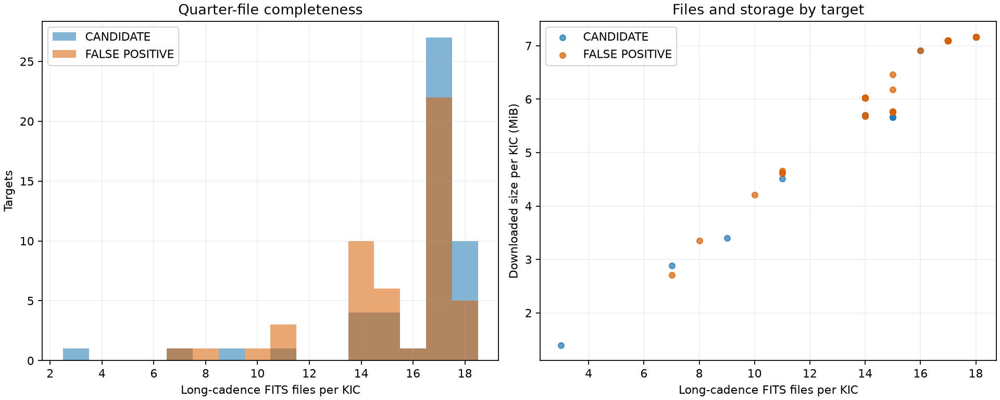
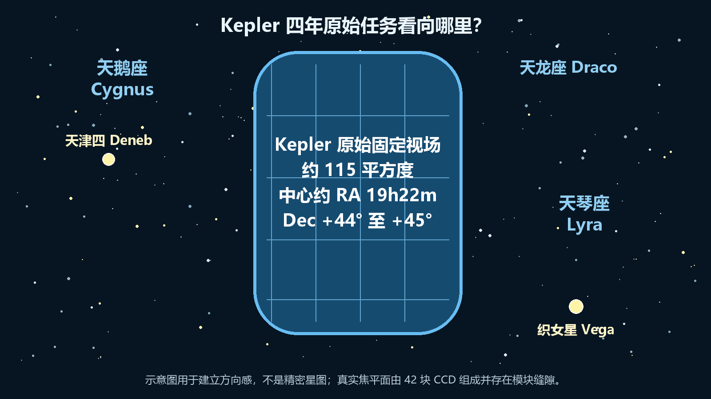
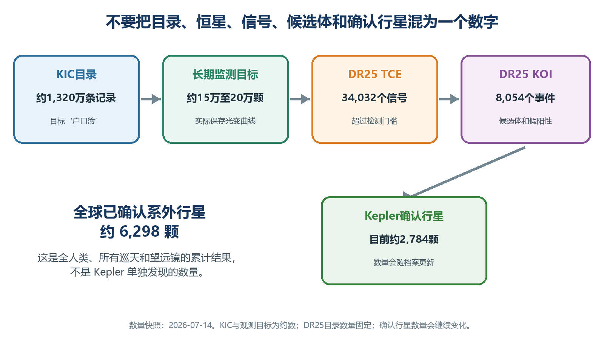
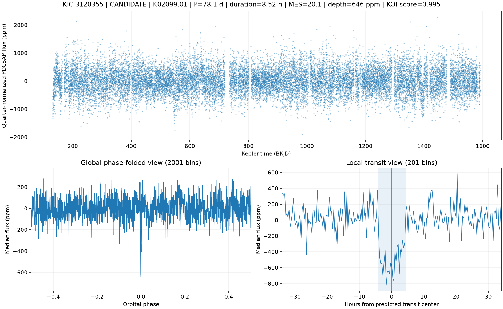
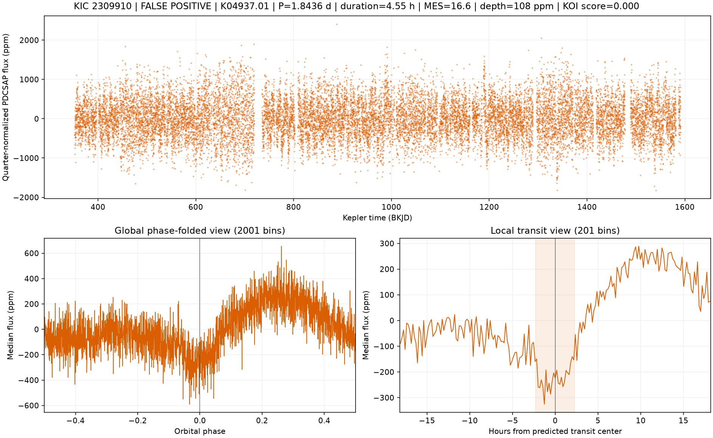

本文配合本项目 M0 阶段生成的 100 张检查图阅读。目标不是让读者立刻“确认一颗行星”，而是学会看懂：数据从哪里来、图是怎样生成的、哪些形状值得关注、为什么有信号仍可能是假阳性。
1. 我们这一步究竟做了什么？#
Kepler 太空望远镜连续观测大量恒星的亮度。如果一颗行星恰好从恒星和我们之间经过，恒星会周期性地变暗一点。这个方法叫作凌星法（transit method）。
本项目目前完成的是一个“小规模闭环”：
- 从 NASA Exoplanet Archive 下载 Kepler DR25 的 TCE、KOI 和恒星参数目录；
- 从中选择 50 个候选体宿主和 50 个假阳性宿主，共 100 个 KIC 目标；
- 从 MAST 下载这些目标的 1,569 个 Kepler long-cadence FITS 文件；
- 清除无效点和质量标志不佳的观测，并按季度归一化；
- 使用目录给出的周期和凌星时刻折叠光变曲线；
- 为每个目标画出一张便于人工检查的三联图。
这 100 张图是已知 TCE 的数据检查与模型准备样本，不是“新发现了 100 颗行星”。真正寻找未知行星，还要在未标注恒星中运行 BLS/TLS 周期搜索、产生新 TCE，再做同样的筛选和验证。
本批数据规模#
| 数据 | 数量 | 大小 |
|---|---|---|
| DR25 TCE 目录 | 34,032 条 | 40,508,086 字节 |
| DR25 KOI 目录 | 8,054 条 | 10,302,135 字节 |
| DR25 stellar 目录 | 200,038 条 | 130,313,116 字节 |
| 100 个目标的 long-cadence FITS | 1,569 个文件 | 678,191,040 字节 |
| 科学源文件合计 | 1,572 个文件 | 约 819.51 MiB |
这些数据都由 E5 机器直接从 NASA/MAST 下载。Windows 本地只保存文章、报告、清单和结果图。

2. 最少需要知道的天文基础#
2.1 为什么行星经过会让恒星变暗？#
恒星是一块发光的圆盘。行星从它前面经过时，会挡住一小部分光。望远镜看到的不是行星本身，而是恒星总亮度出现一个很浅的凹陷。
如果忽略恒星表面的明暗差异，凌星深度近似满足：
凌星深度 ≈（行星半径 / 恒星半径）²
例如深度为 646 ppm：
646 ppm = 646 / 1,000,000 = 0.000646
行星半径 / 恒星半径 ≈ sqrt(0.000646) ≈ 0.0254
这只给出半径的比例。要估算行星的真实大小，还必须知道恒星半径，并考虑掠凌、邻星污染、边缘昏暗等效应。
2.2 什么是光变曲线？#
光变曲线（light curve）就是“时间 - 亮度”图：
- 横轴：观测时间；
- 纵轴：恒星相对亮度；
- 向下的凹陷：恒星暂时变暗；
- 周期性重复凹陷：可能由绕恒星运行的天体引起。
但是，恒星活动、食双星、背景恒星、宇宙线、指向抖动、探测器系统误差也会制造凹陷。因此“有凹陷”只是开始，不是结论。
2.3 long cadence 是什么？#
Kepler 的 long-cadence 数据大约每 29.4 分钟记录一次亮度。它适合长时间连续监测，但会把很短的凌星形状稍微抹平。
Kepler 的数据还按 quarter（季度）分段。望远镜大约每三个月旋转一次，不同季度的基线可能略有变化，所以我们的图先对每个季度分别做中位数归一化，再拼接。
2.4 ppm 是什么？#
ppm 是百万分之一（parts per million）。
- 100 ppm = 0.01%；
- 1,000 ppm = 0.1%；
- 数值越大，亮度变化越明显。
图中纵轴写着 ppm 时，-600 ppm 表示恒星亮度比归一化基线低约 0.06%。
2.5 Kepler 是“扫描天空”，还是“盯住一块天空”？#
Kepler 原始任务更准确的说法不是“不断扫描”，而是像一台固定的高精度监控摄像机，连续盯住同一块天区。它从 2009 年开始，约四年间完成 Q1 到 Q17 的原始任务观测。只要一颗目标恒星仍落在可用探测器上，Kepler 就反复测量它的亮度，从而等待同一颗行星一次又一次经过恒星前方。
望远镜大约每三个月绕视线方向旋转 90 度，让太阳能板继续获得合适的日照。因此，同一颗恒星在不同 quarter 会落到不同 CCD 模块上，光变基线和系统误差可能略有改变；但望远镜看的仍是同一片天空，并没有换到另一个星座。这也解释了为什么我们的预处理要先按季度归一化，再拼接长期光变曲线。
2013 年反作用轮故障后，Kepler 无法再以原来的精度长期保持这一姿态。后续的 K2 扩展任务才改为沿黄道选择不同天区，每个 campaign 观察大约数十天。本文处理的 DR25 数据来自原始 Kepler 固定视场，不是 K2 数据。
2.6 这块固定视场在哪里？#
Kepler 原始视场位于北天夏季银河附近，主要覆盖天鹅座和天琴座，并涉及少量天龙座区域。视场中心大约为赤经 19h22m、赤纬 +44° 至 +45°，有效成像面积约 115 平方度，约占全天空的 0.25%。这个面积对于普通望远镜非常大，大致相当于人在伸直手臂时一只手所覆盖的天空范围。
对中国的天文爱好者来说，最容易使用“夏季大三角”定位：先找到明亮的织女星和天津四，Kepler 视场就在它们附近的北天银河区域。NASA 的视场图中，天津四位于视场左侧附近，织女星位于右下方附近。但这两颗肉眼亮星更多是定位路标；Kepler 相机布局还特意避开部分过亮恒星，以免 CCD 饱和和溢出影响大面积探测器。

这张图用于建立方向感，不是精密星图。真实 Kepler 焦平面由 42 块 CCD 组成，投影轮廓不是一个完整椭圆，而且相机模块之间存在缝隙。
2.7 为什么选择天鹅座和天琴座附近？#
这个视场是工程条件与科学目标共同选择的结果：
- 恒星足够多：视线靠近银河平面，一次就能容纳十几万颗适合精密测光的恒星；
- 又不能过分拥挤：如果直接指向银河中心，邻星光线会严重混合，凌星深度更难解释；
- 可以长期连续观测：Kepler 位于绕太阳的地球尾随轨道，可以较稳定地保持这一指向；
- 方便地面复查：北半球望远镜能继续做光谱、成像和径向速度观测；
- 避开极亮目标：焦平面方向经过设计，降低亮星饱和对 CCD 的影响。
选择固定视场的代价是：Kepler 只抽样了银河系很小的一块区域，而且目标选择受恒星亮度、光谱型、探测器位置等因素影响。因此，用 Kepler 估算“银河系有多少行星”时，必须校正目标选择、漏检概率和假警报率，不能把样本比例直接当作整个银河系比例。
2.8 “发现了六千多颗”为什么容易说错？#
截至本文更新时，NASA Exoplanet Archive 记录的人类累计确认系外行星约为 6,298 颗。这个数字汇总了 Kepler、K2、TESS、地面凌星巡天、径向速度、直接成像、微引力透镜等许多项目，不是 Kepler 一台望远镜发现了六千多颗。
NASA 档案当前列出的“使用 Kepler 观测数据发现并确认的行星”约为 2,784 颗；Kepler Project Candidates 为 4,717 个，其中约 1,978 个尚未确认。候选体数量和确认行星数量不能直接相加，因为两张表之间存在重叠，部分已确认行星仍包含在 candidate 集合中。

理解这些数字时，应当始终问一句：“这个数字数的是恒星、信号事件、候选行星，还是已经确认的行星？”
2.9 KIC 有一千多万条记录，为什么我们只处理 6,923 颗恒星？#
KIC（Kepler Input Catalog）是任务开始前建立的大型目标目录，版本 10 约有 1,320 万条记录，其中还包括视场外或视场边缘附近的天体。它相当于一本“候选目标户口簿”，并不表示目录中的每个对象都被 Kepler 连续保存了四年光变曲线。
原始任务长期监测的目标约为 15 万颗，随着季度和客座观测计划变化，总目标规模可接近 20 万颗。DR25 管线在这些光变曲线中产生 34,032 个 TCE；其中 8,054 个事件进入本文使用的 DR25 KOI 正负标签表，涉及 6,923 个唯一 KIC。我们目前准备下载的 107,364 个 FITS，正是这 6,923 颗带标签恒星在不同季度留下的光变文件。
所以这里有三个重要的不等号：
有KIC编号 ≠ 一定被Kepler长期观测
被Kepler观测 ≠ 一定产生TCE
产生TCE或KOI ≠ 一定拥有真实行星
2.10 哪些 KIC 恒星特别著名？#
Kepler 视场并不是以肉眼亮星为主。它最著名的对象，往往是因为行星系统、异常光变或恒星物理而出名。下面这些目标很适合以后组成项目的“著名案例测试集”：
| 恒星或系统 | KIC 编号 | 为什么著名 |
|---|---|---|
| Kepler-10 | 11904151 | 最早一批由 Kepler 确认的岩石行星系统，Kepler-10b 是早期标志性超级地球。 |
| Kepler-11 | 6541920 | 一颗类太阳恒星周围至少有六颗凌日行星，是极紧凑多行星系统的经典案例。 |
| Kepler-16 | 12644769 | Kepler-16b 同时绕两颗恒星运行，常被称为现实版“塔图因”。 |
| Kepler-22 | 10593626 | Kepler-22b 是早期著名的类太阳恒星宜居带候选世界。 |
| Kepler-62 | 9002278 | 拥有 Kepler-62e 和 62f 两颗著名的宜居带行星。 |
| Kepler-90 | 11442793 | 已知八行星系统；第八颗 Kepler-90i 是使用神经网络重新搜索 Kepler 数据的重要成果。 |
| Kepler-186 | 8120608 | Kepler-186f 是第一颗著名的、位于恒星宜居带内的地球大小行星。 |
| Kepler-452 | 8311864 | Kepler-452b 因绕类太阳恒星运行且位于宜居带，曾被媒体称为“地球表哥”。 |
| Kepler-444 | 6278762 | 非常古老的多行星系统，说明银河系早期已经能够形成小型行星。 |
| HAT-P-7 | 10666592 | 著名热木星系统，也是 Kepler 的重要校验和大气相位曲线研究目标。 |
| TrES-2 | 11446443 | 拥有反照率极低的热木星 TrES-2b；NASA 早期视场图专门标注过该系统。 |
| Boyajian 星／Tabby 星 | 8462852 | 出现不规则且很深的变暗，曾引发“外星巨型结构”猜测；现有研究更支持不均匀尘埃等自然解释。 |
| RR Lyrae | 7198959 | 著名 RR Lyrae 型脉动变星本尊，Kepler 连续测光为恒星脉动研究提供了珍贵资料。 |
| V1154 Cyg | 7548061 | Kepler 原始视场内著名的经典造父变星，可用于研究恒星脉动周期的细微变化。 |
这里尤其值得记住 KIC 8462852。它不是一颗已确认的“外星文明恒星”，而是一颗光变非常异常的恒星。Kepler 曾观察到它在数日内变暗可达约 20%，远大于普通行星凌星信号。Planet Hunters 公民科学参与者首先注意到这种异常；它说明 Kepler 数据不仅能找行星，也能发现我们没有预先设定模板的恒星现象。
KIC 11442793 也与本项目关系密切：Google 团队使用神经网络重新检查 Kepler 已知系统，确认了 Kepler-90i，使 Kepler-90 成为著名的八行星系统。这正是“经典管线产生候选信号，再由机器学习帮助重新排序和发现遗漏目标”的代表案例。
2.11 视场里还有哪些著名天体？#
除了单颗恒星和行星系统，Kepler 视场内还有多个著名疏散星团：
- NGC 6791：年龄很老、金属丰度又较高，是研究银河系演化、恒星年龄和星震学的重要实验室；
- NGC 6811：包含 Kepler 发现的行星宿主，可用于比较同龄恒星的自转和行星形成；
- NGC 6819：适合把星震学质量、半径与星团年龄结合起来研究。
固定四年的高精度测光还让 Kepler 成为恒星物理望远镜：它记录星斑和自转、耀斑、脉动变星、食双星、星震振荡以及各种突发或长期变化。换句话说，一条“不是行星”的光变曲线并不等于没有科学价值；它可能是另一类有趣天体。
2.12 这对我们的机器学习项目意味着什么？#
我们的 AstroNet 基线首先学习的是：“一个已经由管线找到并折相的 TCE，更像 DR25 候选体还是假阳性？”它不是直接在 1,320 万个 KIC 对象中凭空宣布新行星。
未来真正的新发现流程至少分成两层：
- 搜索层：在更多未标注恒星的长期光变曲线中使用 BLS、TLS 或其他周期搜索产生新 TCE；
- 甄别层：用 AstroNet、Robovetter 指标、质心信息、奇偶凌星差异和人工检查给 TCE 排序；
- 确认层：查询邻星污染、像素级数据、星表交叉匹配，并用地面光谱或其他观测确认。
著名 KIC 系统可以作为非常直观的案例研究，但不能只用“名星”测试模型。正式评估仍要按照 KIC 分组划分 train、validation 和 test，并保留模型从未见过的恒星，才能判断它是否真的学会了可推广的凌星形状。
3. KIC、TCE、KOI 到底是什么？#
这些缩写非常容易混淆。
KIC：恒星的身份证号#
KIC 是 Kepler Input Catalog 编号。例如 KIC 3120355 指向一颗 Kepler 观测目标。一个 KIC 可能包含多个周期信号，因此一颗恒星可能对应多个 TCE 或 KOI。
TCE：超过检测门槛的周期信号#
TCE 全称 Threshold-Crossing Event。Kepler 管线在光变曲线中找到一个重复信号，并认为它超过检测门槛，就会产生一个 TCE。
TCE 的含义只是：这里有一个值得进一步检查的周期信号。
它可能是：
- 真正的行星凌星；
- 食双星；
- 背景食双星；
- 恒星活动；
- 仪器或处理伪影。
KOI：进入 Kepler 重点审查名单的对象#
KOI 全称 Kepler Object of Interest。经过进一步处理和筛选后，一部分 TCE 会成为 KOI，并获得 CANDIDATE 或 FALSE POSITIVE 等处置标签。
MES：重复信号的综合显著性#
MES（Multiple Event Statistic）可粗略理解为多个凌星事件叠加后的信号显著性。MES 越高，通常说明周期信号越明显。但 MES 高只表示“这个重复信号明显”，不表示“它一定是行星”。明显的食双星同样可以有很高的 MES。
KOI score：DR25 自动筛选分数#
图中的 KOI score 来自 Kepler DR25 Robovetter。它用于衡量该信号在自动筛选中有多像行星候选体：
- 趋近 1：更像候选体；
- 趋近 0：更像假阳性。
注意：这不是我们自己的神经网络预测概率。当前 M0 阶段还没有训练 AstroNet 模型。
4. 为什么要“折相”？#
一颗周期为 78 天的行星，每 78 天才凌星一次。若直接看四年的完整时间轴，每次凌星只占很窄的一小段，很难看清。
折相（phase folding）的做法是：
- 取目录中的轨道周期；
- 把相隔一个、两个、三个周期的观测对齐；
- 将所有凌星叠加到相位 0 附近；
- 对同一相位区间取中位数，压低随机噪声。
可以把它想象成把一条很长的纸带按固定长度折起来。真正按这个周期重复的凹陷会重合，随机噪声则不会完全重合。
5. 一张检查图应该怎样看？#
每张图由标题和三块子图组成。

5.1 先看标题#
示例标题：
KIC 3120355 | CANDIDATE | K02099.01 |
P=78.1 d | duration=8.52 h | MES=20.1 |
depth=646 ppm | KOI score=0.995
字段含义：
KIC 3120355：恒星编号；CANDIDATE：DR25 标签；K02099.01：KOI 编号；P=78.1 d：轨道周期约 78.1 天；duration=8.52 h：一次凌星约持续 8.52 小时；MES=20.1：叠加后的检测显著性；depth=646 ppm：凌星深度；KOI score=0.995：DR25 Robovetter 给出的候选评分。
5.2 上图：完整时间序列#
上方大图显示跨多个季度的 PDCSAP 光变：
- 横轴 BKJD：Kepler 使用的时间系统；
- 纵轴：每季度归一化后相对亮度的 ppm 偏差；
- 中间空白：季度之间的间隔、数据缺失或质量筛选造成的空档；
- 少数尖点：可能是残余异常点、恒星爆发或仪器影响。
这张图主要用来判断数据是否完整、是否存在严重漂移、爆发或季度基线异常。它通常不能直接显示很浅的单次凌星。
5.3 左下图：global phase-folded view#
这张图把整个轨道周期压到相位 -0.5 到 +0.5，并分成 2,001 个 bin。
重点看：
- 相位 0 是否有清晰凹陷；
- 其他相位是否还有同样明显的凹陷；
- 周期外变化是否过强；
- 凹陷是否孤立，而不是一大片起伏的一部分。
对 KIC 3120355，相位 0 处有窄而明显的下降，其他相位没有同样深的周期结构，这是较好的候选形态。
5.4 右下图：local transit view#
这张图只放大凌星中心附近，并分成 201 个 bin：
- 横轴：距离预测凌星中心的小时数；
- 0 小时：目录给出的凌星中心；
- 淡色竖带：目录给出的凌星持续时间范围；
- 纵轴：折叠后的中位亮度变化。
值得关注的行星凌星通常表现为：
- 中心与 0 小时大致对齐；
- 两侧基线相对平稳；
- 下降和恢复大致对称；
- 形状可能偏 U 型；
- 深度与目录值大致相符。
但“U 型”不是铁律。掠凌行星、长曝光平滑、恒星边缘昏暗和噪声都会改变形状。
6. 蓝色和橙色代表什么？#
本项目为了方便阅读，使用固定配色：
- 蓝色：CANDIDATE，即 DR25 候选体标签；
- 橙色：FALSE POSITIVE，即 DR25 假阳性标签。
颜色是我们画图时人为指定的类别标记，不是恒星或行星的真实颜色，也不是模型自己“看到”的颜色。
一个橙色假阳性示例#

这个目标的标题给出：
- 周期约 1.8436 天；
- 持续时间约 4.55 小时；
- MES 约 16.6；
- 深度约 108 ppm；
- KOI score 为 0.000。
它确实在相位 0 附近出现下降，所以“假阳性”不等于“完全没有信号”。值得警惕的是：
- global 图存在宽而不对称的周期结构；
- local 图的基线并不平坦；
- 凌星后出现明显的长时间抬升；
- 形状不像一个孤立、对称的简单凌星。
这说明它的周期变化可能来自恒星活动、食双星、邻星污染或处理伪影。仅凭这张图还不能确定具体是哪一种假阳性；需要查看 Robovetter flags、奇偶凌星、次食、像素质心和邻星信息。
蓝色也不等于“已确认行星”#
蓝色只表示这个 KOI 在 DR25 中被归为候选体。候选体仍可能在后续观测或更严格分析中被推翻。确认行星通常还需要：
- 排除背景食双星；
- 检查像素质心是否在凌星时移动；
- 检查奇数次和偶数次事件深度；
- 搜索轨道半周期处的次食；
- 评估邻星稀释；
- 结合径向速度、成像或统计验证。
7. 初学者检查任意一张图的七步法#
第一步：读标题，不要先猜形状#
记下 KIC、标签、周期、持续时间、MES、深度和 KOI score。长周期、小深度、低 MES 的目标本来就更难看清。
第二步：检查完整时间序列#
看是否有大段缺失、明显漂移、强烈恒星活动或大量异常尖点。若原始时间序列质量很差，折相后的凹陷也可能不可靠。
第三步：在 global 图找相位 0 凹陷#
若相位 0 没有凹陷，可能是历元/周期问题、数据处理问题或弱信号。若别的相位还有类似深凹陷，要怀疑次食或周期取错。
第四步：观察 global 图的周期外结构#
行星凌星通常是局部事件。如果整个相位曲线呈现宽波浪、斜坡或多处结构，可能存在恒星活动、椭球变化、反射效应或系统误差。
第五步：放大 local 图#
判断事件是否居中、局部基线是否平坦、下降和恢复是否大致对称。明显 V 型可能提示掠食双星，但不能单凭 V 型直接判死刑。
第六步：比较持续时间和周期#
很短周期却有异常长的事件，或持续时间与恒星密度极不一致，都值得怀疑。不过这需要结合恒星半径、质量和冲击参数计算，不能只凭肉眼。
第七步：把图当作入口，不当作终审#
记录可疑点，再去查：
koi_fpflag_nt：不像凌星；koi_fpflag_ss：显著次食；koi_fpflag_co：质心偏移；koi_fpflag_ec：与已知食双星/周期污染相关；- DV report 和 target-pixel files；
- Gaia 邻星与背景污染。
8. 这些图是怎样从 FITS 生成的？#
当前脚本的处理步骤如下：
- 读取每个季度 FITS 的
TIME、PDCSAP_FLUX和SAP_QUALITY； - 保留时间与亮度为有限值、且
SAP_QUALITY == 0的 cadence； - 每个季度分别除以该季度的中位亮度；
- 将所有季度拼接并按时间排序；
- 使用 TCE 的
tce_period和tce_time0bk计算轨道相位； - global view 在完整相位范围使用 2,001 个 bin；
- local view 在凌星附近使用 201 个 bin；
- 每个 bin 取亮度中位数，降低随机噪声和离群点影响；
- 将相对亮度换算为 ppm 后绘图。
本批 100 个目标总共有 6,312,080 条原始 cadence。质量标志与有限值筛选后，留下 5,288,299 条 cadence。
为什么用 PDCSAP_FLUX？#
Kepler FITS 同时提供 SAP_FLUX 和 PDCSAP_FLUX。PDCSAP_FLUX 已经过管线对常见系统趋势的校正，适合快速构造机器学习基线。但任何校正都有可能削弱真实的长时间变化或产生伪影，因此严肃候选复核仍应回看 SAP_FLUX、像素级数据和不同去趋势方法。
9. 当前检查图还没有展示什么？#
这版图用于 M0 数据闭环，故意保持简单。它还没有直接展示：
- 奇数次与偶数次凌星的深度对比；
- 半周期处的次食搜索；
- 每个季度分别折相的稳定性；
- centroid time series 和 difference image；
- 邻星位置与 Gaia 污染；
- transit model 拟合残差；
- BLS/TLS periodogram；
- 我们自己的 AstroNet 模型概率与解释热图。
这些会在后续 vetting 与模型阶段逐步加入。因此现在最合理的用途是：
- 验证下载和预处理是否正确；
- 让人理解 CANDIDATE 与 FALSE POSITIVE 的典型差异；
- 发现异常样本和预处理错误；
- 为机器学习输入 global/local view 做准备。
10. 五个常见误解#
误解一：看到凹陷就是行星#
错误。食双星、背景星和仪器误差都能产生凹陷。
误解二：MES 高就一定是行星#
错误。MES 衡量重复信号显著性，不判断信号的天体物理来源。
误解三：橙色图应该没有凌星形状#
错误。假阳性往往正是因为“很像凌星”才进入 TCE/KOI 流程。
误解四：KOI score 就是我们的 AI 结果#
错误。它来自 DR25 Robovetter。我们自己的 AstroNet 尚未训练。
误解五：100张图就是发现了100颗新行星#
错误。这100个目标来自已有 DR25 标签，是训练与验证用的小样本。真正的新发现必须从未标注光变曲线独立产生新 TCE，并完成后续排假和验证。
11. 接下来怎样走向机器学习？#
下一阶段会把每个 TCE 转换成经典 AstroNet 输入：
- global view：2,001 个点；
- local view：201 个点；
- 标签：CANDIDATE 或 FALSE POSITIVE；
- 切分：按 KIC 分组，确保同一恒星不会同时进入训练集和测试集。
先训练并比较：
- 标量特征 Logistic Regression；
- 梯度提升树；
- global/local 双分支 1D CNN；
- CNN 加恒星参数与 TCE 诊断量。
评估不能只看 accuracy，还要看 ROC-AUC、PR-AUC、precision、recall、概率校准，以及低 MES、长周期、小半径子集的表现。
等模型在已知 TCE 上经过严格验证后，才进入真正的搜索阶段：对未标注恒星运行 BLS/TLS，产生新的周期候选，再使用模型排序与天体物理 vetting。
12. 快速术语表#
| 术语 | 初学者解释 |
|---|---|
| Transit / 凌星 | 天体经过恒星前方，使恒星暂时变暗 |
| Light curve / 光变曲线 | 恒星亮度随时间变化的曲线 |
| KIC | Kepler 目标恒星编号 |
| TCE | 超过检测门槛的周期信号，未必是行星 |
| KOI | 被列入进一步审查的 Kepler 兴趣目标 |
| CANDIDATE | 尚未被排除的行星候选体 |
| FALSE POSITIVE | 已被判定更可能是非行星来源的信号 |
| Period | 相邻两次凌星之间的时间 |
| Epoch | 参考凌星中心时刻 |
| Duration | 一次凌星从开始到结束的大致时间 |
| Depth | 凌星导致的亮度下降幅度 |
| MES | 多次事件叠加后的检测显著性 |
| ppm | 百万分之一的相对亮度单位 |
| Phase folding / 折相 | 按周期对齐多次事件并叠加 |
| Global view | 展示完整轨道相位的折相输入 |
| Local view | 放大凌星附近的折相输入 |
| Cadence | 一次亮度采样或采样间隔 |
| PDCSAP_FLUX | 经 Kepler 管线校正常见系统趋势的光度序列 |
13. 文件在哪里？#
本地 100 张检查图：
D:\e5_96g\开普勒望远镜系外行星寻找\
结果图\M0首批100目标\pilot100_lightcurve_cards\
逐 FITS 下载清单：
D:\e5_96g\开普勒望远镜系外行星寻找\
操作记录\M0下载清单_2026-07-14\pilot_100_lightcurve_files.csv
E5 原始 FITS：
/mnt/cloud_3t5/exoplanet_data/lightcurves_raw/kepler_dr25_pilot100/
14. 资料来源#
- NASA Exoplanet Archive，Kepler 数据产品总览：https://exoplanetarchive.ipac.caltech.edu/docs/Kepler_Data_Products_Overview.html
- NASA Exoplanet Archive，TAP 与 DR25 表：https://exoplanetarchive.ipac.caltech.edu/docs/TAP/usingTAP.html
- NASA Exoplanet Archive，KOI 表用途：https://exoplanetarchive.ipac.caltech.edu/docs/PurposeOfKOITable.html
- MAST，Kepler 数据与批量下载：https://archive.stsci.edu/missions-and-data/kepler/kepler-bulk-downloads
- Shallue & Vanderburg (2018)，AstroNet：https://arxiv.org/abs/1712.05044
- Google Research
exoplanet-ml归档代码：https://github.com/google-research/exoplanet-ml - NASA，Kepler 原始任务与 K2 概览：https://science.nasa.gov/mission/kepler/
- NASA，Kepler 原始视场说明：https://science.nasa.gov/resource/kepler-field-of-view/
- NASA/JPL，Kepler 视场星图与 42 块 CCD：https://www.jpl.nasa.gov/images/pia11983-where-kepler-sees
- NASA Exoplanet Archive，当前确认行星与 Kepler 候选体统计：https://exoplanetarchive.ipac.caltech.edu/docs/counts_detail.html
- MAST，Kepler Input Catalog（约 1,320 万条记录）：https://archive.stsci.edu/kepler/kic.html
- NASA，Boyajian 星与公民科学发现：https://science.nasa.gov/citizen-science-old/five-extraordinary-citizen-science-discoveries/
一句话总结#
Kepler 找行星不是“看见一颗行星”，而是从极其微弱、周期重复的星光变暗中提出候选，再用多种证据逐层排除更普通的解释。